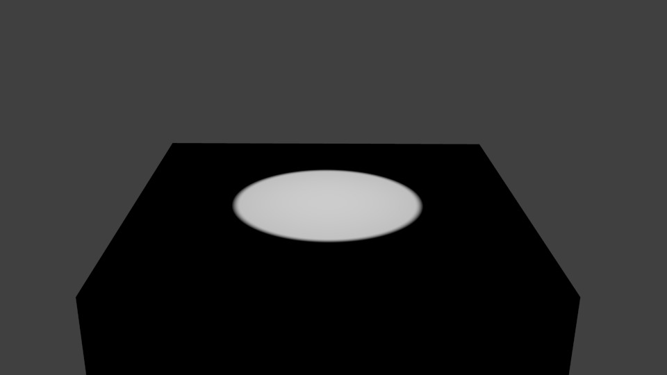
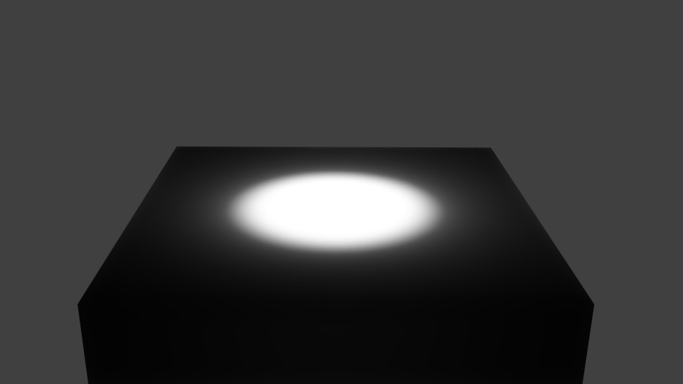
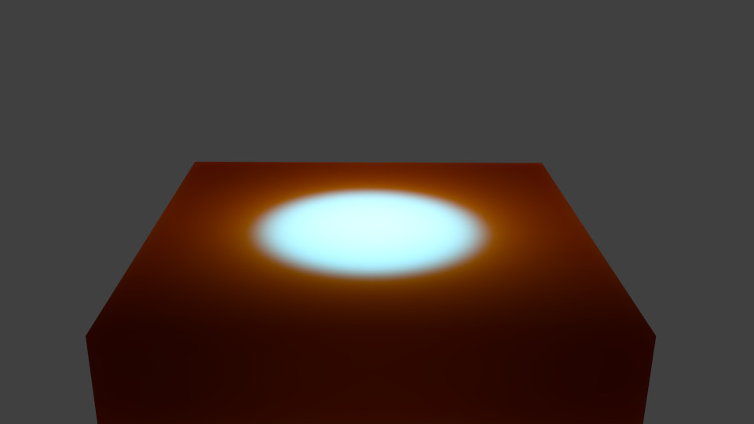

Підповерхневе Розсіювання -- Subsurface Scattering¶
Імітує напівпрозорі об'єкти, в які промені світла входять, відскакують навколо, а потім виходять в інших місцях. Багато органічних та неорганічних матеріалів не є повністю безпрозорими прямо на поверхні, а тому світло не просто відскакує від верху поверхні. Натомість, деяке світло також проникає глибоко у товщу поверхні та розсіюється навколо там всередині, беручи колір цієї середини та проявляється назад в іншому місці. Людська шкіра, тваринна шкура, шкурка виноградин, помідорів, фруктів, віск, гелі (як мед або желе) тощо, всі мають підповерхневе розсіювання -- subsurface scattering (SSS), та фото-реалізм їх вигляду реально не може бути досягнутий без нього.
Важливо розуміти, що підповерхневе розсіювання та розсіяння є майже одним і тим же. Відмінність полягає у тому, як далеко світло може розсіятися під поверхнею перед тим, як воно поглинеться або пропуститься назад.
Як це працює¶
Фактичне обчислення шляху світла під поверхнею об'єкта не є практичним. Але було показано, що не і необов'язково робити, а для його імітації використовується інший підхід.
Blender обчислює SSS у два кроки:
- На першому кроці обчислюється освітленість або яскравість поверхні з передньої та задньої сторін об'єкта. Це майже так само, як і при звичайному зображуванні, рендерингу. При цьому враховуються Загорода Оточення -- Ambient Occlusion, Опромінюваність -- Radiosity, тип розсіяного Відтінювача, колір світла тощо.
- На другому кроці у ході зображування, рендерингу фінального зображення відтінювач підповерхневого розсіювання SSS замінює собою обчислений розсіяний відтінювач. Замість ламп використовується обчислена карта освітлення -- lightmap. Яскравість точки поверхні обчислюється «усереднено» на основі яскравостей оточувальних її точок. Залежно від ваших устав, може бути врахована поверхня повністю, і це трохи більш складніше, ніж просте обчислення усереднення, але не надто турбуйтеся математикою в основі цього.
Натомість давайте погляньмо, що SSS робить у різних освітлених точках.

Без Підповерхневого Розсіювання. |
|

Збільшений радіус Підповерхневого Розсіювання. |

Підповерхневе Розсіювання з дуже великим значенням радіусу для червоного кольору. |
{kind=link}
{kind=link}
{kind=link}
{kind=link}
Якщо ви вмикаєте Підповерхневе Розсіювання, то світло розповсюджується на більшій площі. Розмір цієї площі залежить від значень радіусу. Замість розповсюдження усіх кольорів однаковою мірою ви можете вказати різні значення радіусу для кожного з кольорів RGB.
Якщо ви використовуєте дуже велике значення радіусу для кольору, то забарвлене ним світло рівномірно розповсюдиться по всьому об'єкту.
Ghi chú
Scatter Radius
Через такий спосіб обчислення розсіювання при використанні великих значень радіусу ви помітите артефакти облямівки, що мають вигляд як доповняльний колір до домінантного кольору розсіювання. Вище, на останній картинці ілюстрації ви бачили блакитнувату смугу на освітленій ділянці. Це злощасне обмеження. Способом зменшення цього ефекту є використання одночасно кількох проходів з різними радіусами розсіювання та їх усереднення.
Увімкнення підповерхневого розсіювання¶
Панель «Підповерхневе Розсіювання» -- Subsurface Scattering. Підповерхневе Розсіювання вже увімкнуто.
- Вмикання Підповерхневого Розсіювання здійснюється клацком на стягу у назві панелі Subsurface Scattering.
- Вгорі панелі доступні різні передустави. При виборі передустави значення радіусу Radius, устав RGB Radius та IOR задаються за вас. Решта опцій не установлюються (оскільки вони здебільшого залежать від розміру вашого об'єкта).
Subsurface Scattering не потребує простеження променів. Але, оскільки воно залежне від падного світла та тіней, то вам необхідне належне обчислення тіні (яке може потребувати простеження променів).
Опції¶
Ці числові повзунки керують тим, як світло розсіюється:
- Показник Заломлення -- IOR
- Значення Index Of Refraction визначає спад падного світла. Вищі значення означають, що світло спадає швидше. Цей ефект є досить тонким та змінює функцію розповсюдження лише зовсім трохи. На основі дослідження багатьох різних матеріалів можна зазначити, що значення від 1.3 до 1.5 добре підходять для більшості матеріалів. Якщо ви знаєте точно, який матеріал ви намагаєтеся імітувати, то можете подивитися значення тут -- Значення Показника Заломлення для поширених матеріалів.
- Масштаб -- Scale
- The scale of your object, in Blender units, across which you want the scattering effect to take place. Scale of 1.0 means 1 Blender unit equals 1 millimeter, scale of 0.001 means 1 Blender unit equals 1 meter. If you want to work out what scale value to use in your scene, just use the formula: (size in Blender units)/(real-world size in millimeters)=scale.
- Колір Розсіювання (Альбедо) -- Scattering Color (Albedo)
Альбедо -- це ймовірність, що освітлення збережеться після події розсіювання. Якщо ви подумаєте про розсіювання як фільтр, то це є висотою такого фільтра. Це множиться на колір поверхні. На практиці це не є інтуїтивно зрозумілим. Він повинен бути таким же, як і колір поверхні, однак, зміна цього значення дає не інтуїтивні результати на ефект розсіювання:
Чим темніше цей колір, тим більше світло розсіюється. Значення 1 для відтінків кольорів не даватимуть жодного ефекту розсіювання.
А тому, якщо ви задасте його як зелений, то освітлені області об'єкта будуть виглядати як зелені, а зелений колір розсіюватиметься тільки трохи. Звідси, темніші області будуть мати вигляд червоних і синіх. Ви можете компенсувати різне розсіювання, задавши більший радіус для цього кольору.
- Радіус RGB -- RGB Radius
- Це не є фактичним радіусом підповерхневого розсіювання, а усередненою довжиною шляху між подіями розсіювання. При проходженні світла крізь об'єкт, воно відскакує навколо, а далі виходить з-під поверхні у деякій іншій точці. Це значення відповідає усередненій довжині, яку світло проходить між кожним відскоком. Чим довша ця довжина шляху є, тим далі світлу дозволено розсіюватися. Це головне джерело сприйнятого «кольору розсіювання» матеріалу. Матеріал, як шкіра, буде мати вище значення для червоного, ніж для зеленого і синього. Підповерхневе розсіювання -- це розсіяння, дифузія світла під поверхнею. Ви керуєте тим, як далеко світло поширюється для досягнення конкретного результату.
- Змішання -- Blend
- Колір -- Color
- Це керує тим, наскільки опція RGB модулює колір та текстури розсіяння, дифузії. Зауважте, що навіть при заданні цієї опції як 0.0, опція RGB все ще впливатиме на поведінку розсіювання.
- Текстура -- Texture
- Наскільки текстура поверхні розмивається з розсіюванням.
- Вагомість Розсіювання -- Scattering Weight
- Спереду -- Front
- Фактор для збільшення чи зменшення розсіювання спереду. Коли світло входить через передню сторону об'єкта, наскільки воно поглинається або додається? (Зазвичай, 1.0 або 100%).
- Позаду -- Back
- Factor to increase or decrease the backscattering. Light hitting an object from behind can go all the way through the object and come out on the front of the object. This happens mostly on thin objects, like hands and ears.
- Помилка -- Error
Цей параметр керує тим, як точно алгоритм відбирає оточувальні точки. Залишення його значення як 0.05 повинно давати зображення без артефактів. Воно може бути задано вищим для пришвидшення зображування, рендерингу, але потенційно з помилками.
Задання його як 1.0 є добрим способом для швидкого отримання передогляду, але з помилками.
Розроблення власного матеріалу з підповерхневим розсіюванням¶
Традиційний підхід¶
Більш поширений, але менш інтуїтивний підхід -- використання «нашарування». Це спрощена версія підходу нашарування. Дивіться детальніше зовнішні посилання нижче:
- Задайте колір Підповерхневого Розсіювання, зазвичай, як домінантний колір об'єкта. Якщо ви хочете використати різні радіуси для кольорів, то не задавайте цей колір надто темним.
- Задайте фактор масштабу. Якщо ви хочете бачити більше півпрозорості, то вам необхідні менші об'єкти або більші значення масштабу.
- Задайте значення радіусів.
- Скоригуйте значення яскравості за допомогою устав Front та Back.
Більш інтуїтивний підхід¶
- Задайте колір розсіювання зі значеннями 0.5.
- Задайте вагомість Front як 2.0.
- Задайте фактор масштабу Scale на основі розміру вашого об'єкта відносно сцени. Якщо ви хочете бачити більше півпрозорості, то вам необхідні менші об'єкти або більші значення масштабу.
- Задайте відповідні значення радіусів.
{kind=link}
{kind=link}
{kind=link}
{kind=link}
{kind=link}